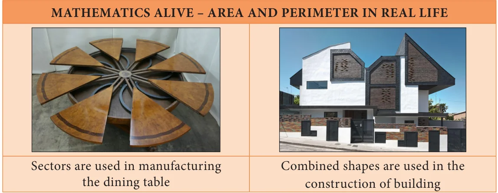
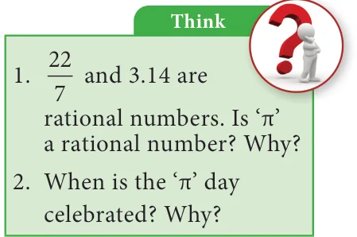

2 MEASUREMENTS
Learning Objectives
To know the parts of a circle. To calculate the length of arc, area and circumference of a sector. To calculate the area and the perimeter of combined plane figures. To understand the representation of 3-D shapes in 2-D. To understand the representation of 3-D objects with cubes.
An important aspect in everyone’s day-to-day life is ‘to measure’. Measuring the length of a rope, the distance between two places, finding the perimeter and area of plots and lands, building the structures under specified measures etc., are a few of the many situations where the concept of ‘measure’ is used. It is said that the biggest invention by man is the wheel. The wheel is otherwise called as the ‘cradle of invention’. What is the shape of a wheel? Circle, isn’t it? In the things we use, apart from circles, we can also see different shapes like triangles, squares, rectangles etc., Measurements play a vital role in everyone’s life. Not only the persons who learns proper mathematics in schools, but also the layman uses his logical thinking to apply the concept of measurements when he needs. For example, a carpenter who carves out the wooden wheels of a temple car wants to protect the outer surface by an iron strap. With all his experience, he says that a 22 feet strap will be required for a 7 feet high (diameter) wooden wheel.

We have already learnt how to find the perimeter and the area of shapes like circles, triangles, squares, rectangles, trapeziums, parallelograms etc. In this chapter, we shall see the parts of a circle and how to find the perimeter and the area of a sector and some combined shapes.
Recap
The teacher asks the students to calculate the area of the circle of radius 7 cm. Many students have solved it as in Method 1, but a few of them have done it as in Method 2.

Then, they had the following conversation: Sudha : Which of these two answers is correct, Teacher ? Teacher : Both answers are correct but only approximate. Sudha : We get two answers for the same question. How is it possible, teacher? Teacher : We can infact solve this exactly as \(\pi \times 7 \times 7= 49 \pi\) sq.cm. Meena : When we find the area of a square, a rectangle etc., we all get unique answers, but why is the area of a circle not unique ?

Teacher : What is the value of \(\pi\) ? Meena : The value of \(\pi\) is \(\frac{22}{7}\) or 3.14 Teacher : Actually it is neither \(\frac{22}{7}\) nor 3.14. They are only approximate values.
Meena : Then, what is the exact value of \(\pi\) ? Teacher : Though \(\pi\) is the constant, it is a non-terminating and non-recurring decimal number. So, we are not able to use its exact value and to make the calculations easy, \(\frac{22}{7}\) or 3.14 is used as the approximate value of \(\pi\) . Meena : Is the area of a circle always approximate, teacher? Teacher : No, it is an exact answer unless we substitute the value of \(\pi\) as \(\frac{22}{7}\) or 3.14. Meena : Then, for the above problem, \(49 \pi\) sq.cm is an exact answer whereas 154 sq.cm and 153.86 sq.cm. are approximate answers. Am I right, teacher?
Teacher : Yes, you are right Meena.
The circumference of a circle is \(2 \pi r\) units, which can also be written as \(\pi\) dunits. As \(\pi =3.14\) (approximately) and it is slightly more than 3, for some quick guess, we shall say that a circle whose diameter is d units shall have its circumference slightly more than three times its diameter.
For example,
If a round table of diameter of 3m is to be decorated by flower strings around it, it will require a little more than 9m of flower strings.